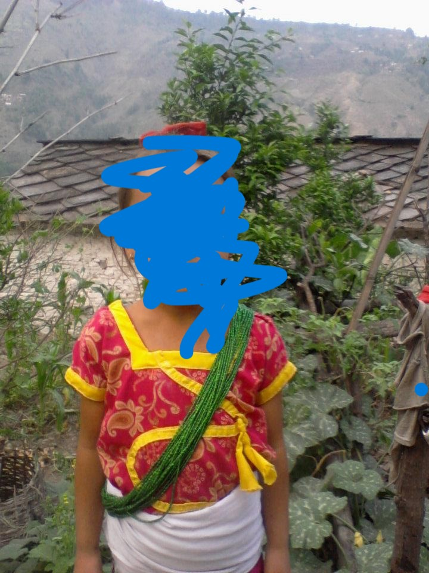
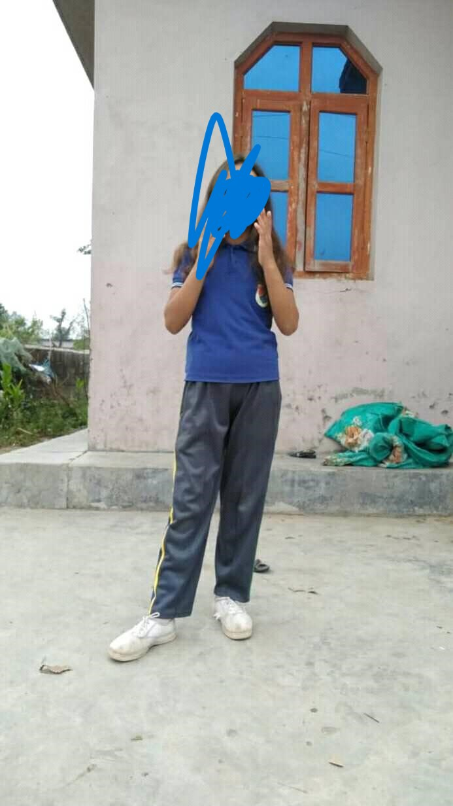
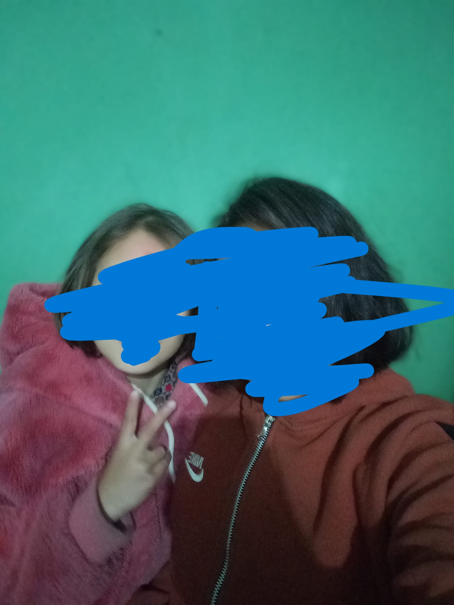

I send her request for the first time.
But she did't accept it.I thought she will but she did't.
I thought she gonna do it in next days.
I send her message for the first time my heart increasing when i message her.And at 12:34 PM I message her first time.Saying only "Nisha".

-Offcourse see did't reply me.
I had first time message her in group.Obviously i was afraid but i message her.That day was saturday and day after tommorow is sunday.I had my math exam on next day.Instead of doing practice i had do chat for neary 4 hours from 7:32 to 11:04.

This is the math exam day.But paper was easy And i got good marks.Because of Text(Exam) our tution was shift to 5:30 PM and Nisha class was in morning so i was unhappy Somehow because of this i cannot see herüò¢.

The start of valentine day.Obviously i wish her.By saying "Happy rose day".I had message her every day.
Happy propose day
Happy choclate day
Happy teddy day
Happy promise day
I did't say happy kiss day i thought she feel uncomfort so i only say "Happy day"
Our exam finished on this day i was not happy because exam finish i was happy because from day after tommorow i can meet her.üòú

The valentine day i was happy because today i can meet her after nerly 9 days.I had cut my hear to look good.And it is running normally even i change and put question mark on her name.
And it is running normally till 2nd march 10:34 PM
She might be true but i don't like it.Even she apologise but i feel to much lonely that night.
i was wake up for 2:34 AM. I don't feel good my heart rate was fast.I feel like i lose everything that night. I was listeing song whole night.
Day after tommorow was no tution because there school has farewell on that day.

I was like trying to move after she said.I am trying too.
I did not talk in class.Everyone asking what happen i say nothing.And this happen till 10th march(Our farewell day) where other have to lose friend but i have to lose friend and her because she message me for the first time i feel so happy.
But She had written 4983 word text in which she talk about my family,me,herself,my future,and so many other thing.She had tell me not to tell this thing to anyone and i haven't till now.Even not to my close friend
I feel two thing happy and sad:-
-Happy because i choose a very nice girl who care for whole family.
-Sad because i have to leave to see her success.
I don't know why but i can't let her go that easily even though i talk her friendly with her but i still have feeling for her
And the days are going she and me had small conversation like asking for question and we help each other.
The last day (Worst day) I don't know i can even see her after that.Day i was so afraid to lose her till now after nearly 5 month i want to see her but i know i can't and it is impossible so i saw her photo everyday,everytime when i miss her.
After the whole year the day was come.Exam come first was english paper is easy.
Holiday because tommorow is math exam.
Second is math its is also somehow easy
Third is Nepali Little bit harder than other
This day is holiday
Fourth is science.Hardest paper in SEE
Fifth is Social.Not that much hard but hard
Sixth is EPH.Easy
Hardest Day of My life.Today is my birthday i was happy and i decided to propose her.She reject.This might be my biggest mistake after this we can't talk like before.I had deleted entire conversation.
The last day of exam.All are happy expect me because i already lose her.I was so depressed.I sleep 16 hours in a day.I don't want to talk to anyone.I feel like so tired.Till April 18.I decided to go Mama ghar For some day to feel better and its work somehow.After coming back started some coding.Play football.And now feel somehow better.
And the days are going.I message her on April 19 Asking Sanchai xau.She replied "Umm".And some small conversation.I always see her profile.See her featured videos.And want to talk with her but i can't because i don't have any topic to talk.
Dada tell me he had message her talking about me. But i know he hadn't.But i love to talk and i got the topic so i message her saying "Dada le timlai message hrya thiyo" she said "nai" And we had that much conversation on that day
I don't know where she gonna continue his future study i thought any colleage in tikapur as kamana said
But she was going to continue his study in Kathmandu. I feel like now every thing going to be end.Again i feel like depressed,I feel like i never meet her Again.

On this day she gone for Kathmandu.I feel unhappy but for good bright future she gone.Obviously I always miss her.May she got all success she want,Stay safe,Be happy in future.

I can't message her but want to message her.Always see her photo video old group conversation and the days are going seeing her profile.
She had make her id private and only her friend can see her profile because she haven't accept my request i can't see her profile.I had written something i want to send her on birthday but i can't because she has make her id private


Now i can't see her.I was unhappy.I found some of his old photo in his mom and dad account.
  
Again the days are going.
I can't wish her but i said ankita to wish her.

I saw her video in his didi account i think his didi post it.
I wish she got happiness in his life,became successful in his life.I always miss her.
Today I know she artist i was shocked.
She is perfect in everything.
I was not going to see any other girl like that i see her because i don't want to go again in same situation which i had before some month ago.
And thank u nisha for all change in my life.That much for now always miss you in my entire life.üòò
Total lines till now 204

Listen her voice after nearly 3 months.
üòòüò≠ü•∫